Sculpture
'The Mountain Man' Bronze Sculpture After Frederic Remington
After Frederic Remington (American, 1861-1909) · 20th century
Price Upon Request

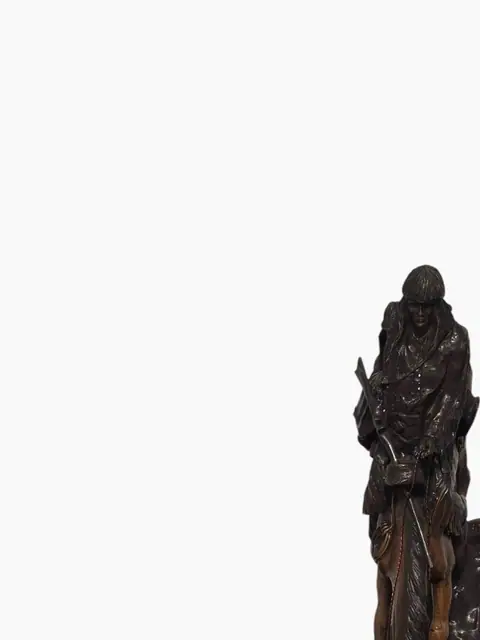
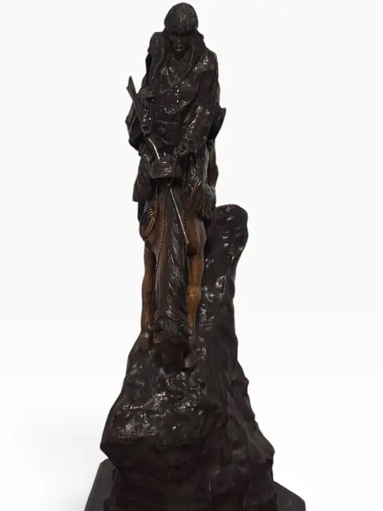
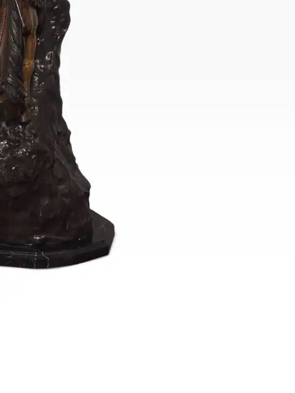
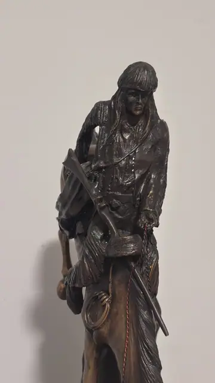
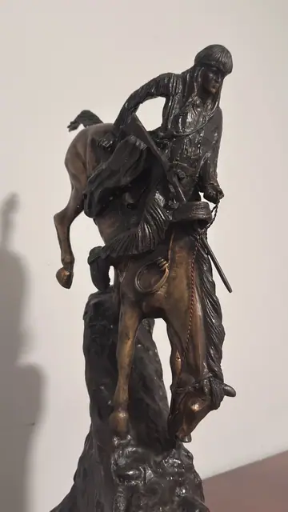
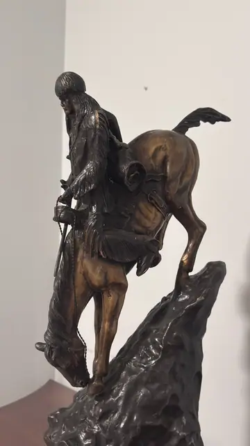
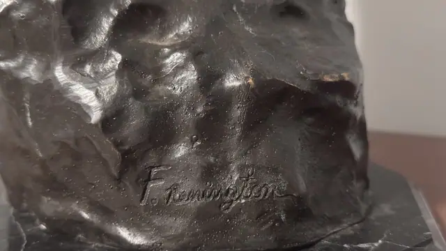
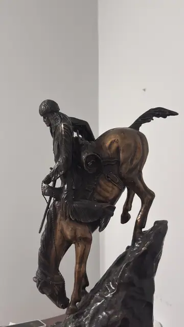
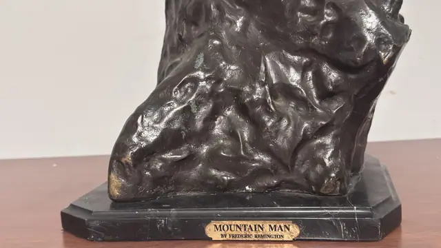
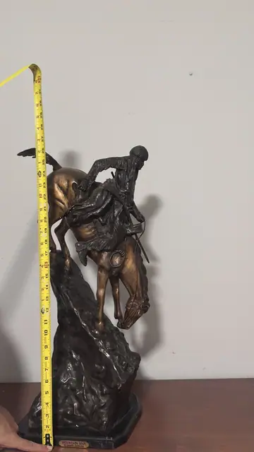
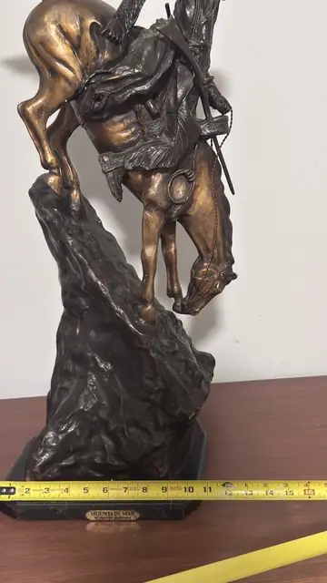
About the Item
A patinated bronze figure after Frederic Remington's 'The Mountain Man' (1903), showing a rider on horseback carefully descending a rocky incline, rifle in hand. The horse is finished in a rich brown patina against darker bronze rockwork, mounted on a black marble base with a brass plaque reading 'Mountain Man by Frederic Remington.' Dimensions: 28 in (71 cm) H x 12 in (30.5 cm) W Title and attribution confirmed by brass plaque photographed on base. Decorative recast, not an original.
Details
- Creator:
- After Frederic Remington (American, 1861-1909)
- Creation Year:
- 20th century
- Medium:
- Patinated bronze on black marble base
- Period:
- 20Th
- Condition:
- Offered in the condition shown in the photographs.
- Reference Number:
- VO-363